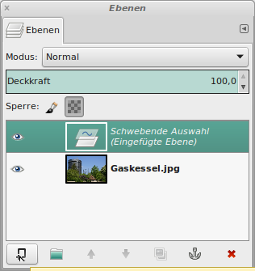
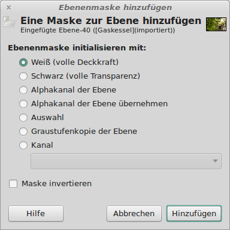
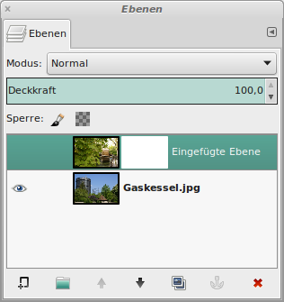
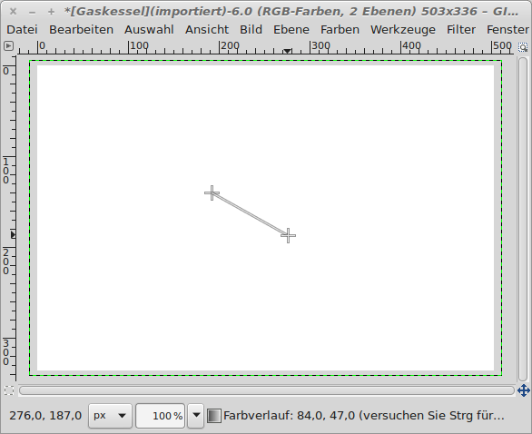

Die Ebenenmaske
Zwei Bilder sollen zu einem kombiniert und ineinander verlaufen. Ein
Effekt, der häufiger in Prospekten und Werbebroschüren zu sehen ist.
Hier die zwei Ausgangsbilder:

|
Abb. 1: Der "Gaskessel" in Augsburg
|

|
Abb. 2: Das Mühlrad in der Altstadt
|
Das Mühlrad wird nun mit Strg + C kopiert und mit Strg +V beim
Gasgessel eingefügt. Beim Einfügen entsteht zunächst eine schwebende
Auswahl, die im Ebenen-Werkzeug als neue Ebene definiert werden muss.
Dazu auf die "Neu" Schaltfläche links unten klicken:

|
Abb.
3: Die schwebende Auswahl muss als neue Ebene definiert werden
|
Ein Bild, das aus der Zwischenablage eingefügt wurde, wird zunächst als
"Schwebende Auswahl" eingefügt. Anschließend muss entschieden werden,
ob die Auswahl verankert, also mit der unteren Ebene vereinigt wird,
oder ob die "Schwebende Auswahl" eine neue Ebene wird. Hier wird eine
neue Ebene definiert. Das Problem dabei war, dass die Bilder
unterschiedliche Größen haben. Der karierte Bereich markiert die
Fläche, um den das Mühlenbild größer ist, als jenes mit dem Gaskessel:

|
Abb.
4: Das eingefügte Bild ist größer als das ursprüngliche.
|
Wir möchten nun das Bild auf die Größe des Gaskesselbildes zuschneiden.
Dazu benötigen wir das Werkzeug
Bild →
Automatisch zuschneiden. (ohne Abbildung)
Um den Überblendeffekt zu realisieren, wird eine Ebenenmaske benötigt.
Dazu müssen wir die obere Ebene aktivieren und dann mit der rechten
Maustaste den Menüpunkt
Ebenenmaske hinzufügen anklicken. Im
darauffolgenden Dialog wurde "Weiß, volle Deckkraft" gewählt:

|
Abb.
5: Eine Ebenenmaske hinzufügen
|
Im Ebenen-Werkzeug erscheint eine weiße Fläche:

|
Abb.
6: Nach dem hinzufügen der Ebenenmaske
|
Die Ebenenmaske bewirkt, dass der Hintergrund bei allen schwarzen
Flächen durchscheint und bei weißen Flächen die obere Ebene voll
sichtbar ist. Grauabstufungen bewirken ein mehr oder weniger starkes
Durchscheinen des Hintergrundes. Um die Ebenenmaske anzuzeigen, muss im
Ebenen-Werkzeug mit der rechten Maustaste auf die Ebene geklickt und im
Kontextmenü der Eintrag
Ebenenmaske anzeigen ausgewählt werden.
Die Bildansicht zeigt daraufhin ein weißes Bild, die Ebenenmaske. Zum
Überblenden wird nun im Werkzeugkasten der Farbverlauf angewählt und
ein Verlauf von Schwarz nach Weiß definiert:

|
Abb.
7: Den Farbverlauf mit der Maus markieren
|
Das Ergebnis ist hier zu sehen:

|
Abb.
8. Der Farbverlauf
|
Die Ebenenmaske muss über das Kontenxtmenü nun wieder ausgeblendet werden (
Ebenenmaske anzeigen).
Nachdem die Ebenen zusammengefügt wurden, sieht das fertige Bild so aus:

|
Abb.
9: Zwei ineinander verlaufende Bilder
|
© 2009-2017 Michael Roppel